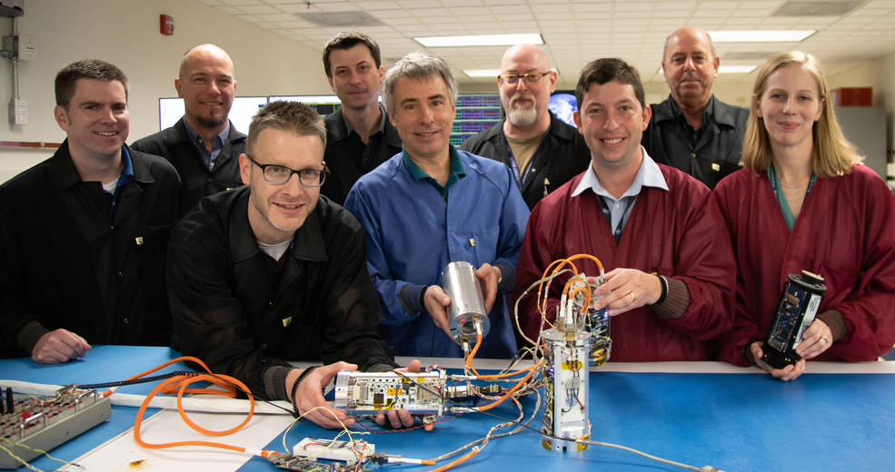

Imagem do banner: Esta ilustração mostra um foguete de sondagem ejetando cargas científicas para coletar amostras da atmosfera superior da Terra durante um evento de aurora. Crédito: NASA/Karl Hille
A tecnologia recém-comprovada desenvolvida no Wallops Flight Facility da NASA perto de Chincoteague, Virgínia, transforma um único foguete de sondagem em uma colmeia implantando um enxame de até 16 instrumentos. A tecnologia oferece precisão sem precedentes para monitorar a atmosfera da Terra e o clima solar em uma ampla área.
A tecnologia Swarm Communications, como apelidada pelos criadores do NASA Wallops, espalha subcargas até 25 milhas fora do foguete. Cada cannister transmite seus dados de telemetria e ciência exclusivos usando rádios a bordo através do sistema de comunicações do foguete hospedeiro para o solo.
A tecnóloga do Sounding Rocket Program Cathy Hesh e o engenheiro elétrico Scott Hesh montaram uma equipe para desenvolver essa tecnologia em 2017 em resposta a solicitações de cientistas do grupo de trabalho de foguetes de sondagem da NASA.
“Tivemos a sorte de ter essa equipe principal com o conjunto de habilidades certo para fazer isso”, disse Scott Hesh. “Conseguimos transformar isso do conceito ao voo em menos de três anos.”
Hoje, após três voos de teste de capacitação científica, o sistema já está reservado pelas equipes da missão para outros quatro lançamentos até meados de 2024.
Começando com um sistema de ejeção de vapor usado para medir os ventos da atmosfera superior, a equipe desenvolveu uma plataforma de sensor padronizada e uma arquitetura de coleta de dados.
O engenheiro mecânico Josh Yacobucci disse que os membros da equipe do enxame se uniram com um foco singular neste projeto.
“Sabíamos desde o início que queríamos uma subcarga que fosse ejetada por mola ou foguete e não precisasse depender de projetos separados para cada opção”, disse ele. “Toda vez que nos reunimos, diversas perspectivas na equipe levaram a melhorias em diferentes sistemas.”
As subcargas implantadas com molas podem transportar cargas maiores, mas são ejetadas do foguete a 2,5 metros por segundo. Essa velocidade permite um raio de até 0,6 milha de separação da carga útil principal. Adicionar um pequeno motor de foguete limita o espaço dentro do cannister, mas aumenta sua velocidade por um fator de 48 para uma separação de 15 milhas. Eles apelidaram seu projeto Swarm Communications, disse Scott Hesh, porque ele se comunica com várias subcargas, embora os canisters individuais não operem independentemente como em outras iniciativas de enxame da NASA.
A equipe Swarm Communications exibe seus canisters de sub-carga útil nas instalações de voo Wallops da NASA, perto de Chincoteague, Virgínia. Na primeira fila (da esquerda para a direita), Taylor Green, Steve Bundick e Josh Yacobucci seguram três das quatro subcargas de enxame que voaram no primeiro voo de demonstração de tecnologia, o que provou que a tecnologia de enxame funcionou. À direita, Cathy Hesh segura um protótipo impresso em 3D usado para desenvolver o conceito antes de construir o hardware de voo. Na fila de trás (da esquerda para a direita) estão Brian Banks, Christian Amey, Scott Hesh, Chris Lewis e Alex Coleman (agora aposentado). Não retratados são Marta Shelton e Gerald Freeman. Créditos: Wallops Flight Facility da NASA/Berit Bland.
Os foguetes de sondagem são lançamentos suborbitais de locais como o Wallops Flight Facility da NASA perto de Chincoteague, Virgínia. Eles fornecem uma plataforma acessível para testar novas tecnologias espaciais e realizar experimentos científicos que não podem ser realizados no solo. Foguetes de sondagem, juntamente com balões e aeronaves, fazem parte do programa de acesso acessível da NASA ao espaço, que oferece essas oportunidades a cientistas, instituições educacionais e estudantes.
No terceiro lançamento em agosto passado, a missão Sporadic-E ElectroDynamics Demonstration do pesquisador Dr. Aroh Barjatya , ou SpEED Demon, viajou até 160 quilômetros de altitude em um foguete Malemute aprimorado por Terrier. Ele procurou medir as condições de um evento transitório Sporadic E: onde uma nuvem de metais de micrometeoros evaporados pode refletir sinais de rádio em um nível na ionosfera que normalmente não reflete o rádio.
“Esta foi uma missão excelente”, disse Barjatya. “A análise preliminar mostra que passamos por um evento Sporadic E na perna descendente e os dados parecem ótimos. Estaremos observando o desempenho de todos os instrumentos para nos preparar para um lançamento em 2024.” Barjatya dirige o Laboratório de Instrumentação Espacial e Atmosférica da Embry-Riddle Aeronautical University em Daytona Beach, Flórida.
“Houve um grande interesse em nossa comunidade de experimentadores em colocar seus pacotes de sensores nesta plataforma”, disse Scott Hesh. “Realmente não é tão difícil para eles construir essas subcargas agora que temos uma plataforma com interfaces de dados padrão e uma fonte de alimentação padronizada. Isso exige muito esforço de design deles.”
“Não podemos construir as subcargas com rapidez suficiente para manter nossos clientes satisfeitos”, acrescentou. “Esse é um bom problema para se ter.”
Trabalhar com cientistas desde o início permitiu que a equipe direcionasse seus esforços para fornecer melhores resultados científicos, disse Cathy Hesh.
“Acabamos pegando vários instrumentos e eles recuperaram muitos dados científicos mesmo em nosso primeiro voo de teste”, disse ela. “Também recebemos feedback bom e em tempo real dos cientistas para ajudar a melhorar todo o projeto.”